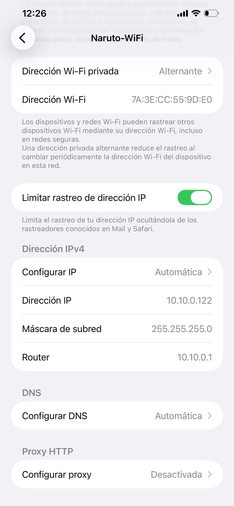
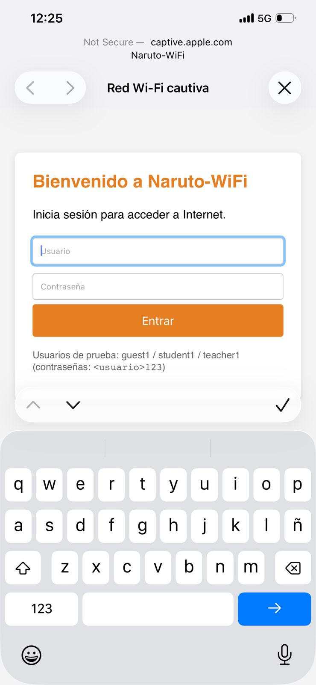
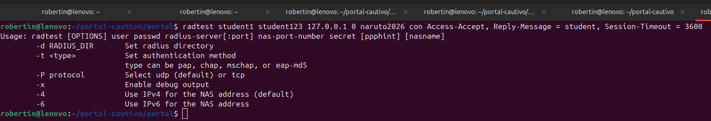
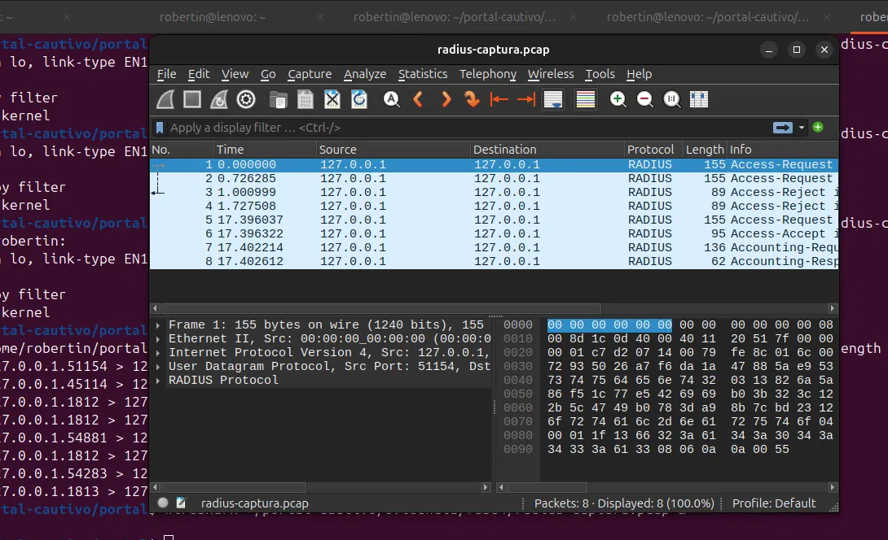
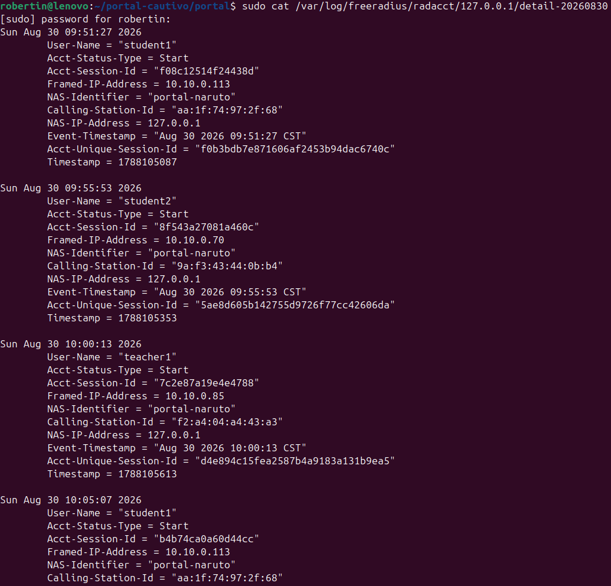
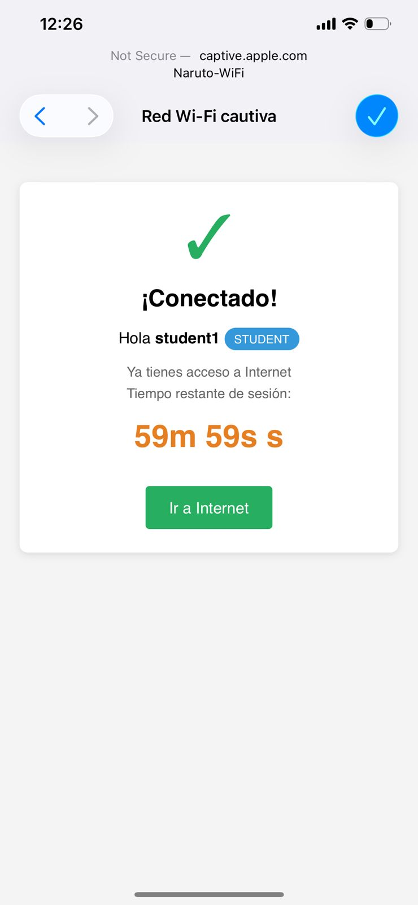

Curso: Redes de Computadoras Universidad: Mariano Gálvez de Guatemala Facultad: Ingeniería en Sistemas de Información Estudiante: Roberto — Carné 7690-22-12700 Fecha: Agosto 2026
Este proyecto implementa un portal cautivo funcional, publicado desde una laptop Ubuntu como punto de acceso WiFi real, con autenticación centralizada mediante un servidor RADIUS (FreeRADIUS) y registro de sesiones (accounting).
El objetivo pedagógico central es evidenciar la diferencia entre la asociación WiFi (capa 2) y el acceso real a Internet (capa 3+): el cliente se asocia al SSID sin problema, pero no obtiene salida a Internet hasta autenticarse en el portal contra RADIUS.
[Celular cliente] --WiFi--> [wlp2s0: 10.10.0.1] --NAT--> [usb0] --> Internet
|
+-- hostapd (AP)
+-- dnsmasq (DHCP/DNS)
+-- nftables (NAT + intercept)
+-- FreeRADIUS (AAA)
+-- Flask (portal)
10.10.0.0/24, gateway 10.10.0.1usb0)wlp2s0, chipset Realtek RTL8822CE)| Componente | Herramienta | Función |
|---|---|---|
| Punto de acceso WiFi | hostapd | Publica SSID Naruto-WiFi en canal 6 |
| DHCP + DNS | dnsmasq | Asigna IPs 10.10.0.50-200, resuelve DNS |
| NAT + firewall | nftables | Enmascara hacia usb0, intercepta HTTP no autenticado |
| Servidor AAA | FreeRADIUS 3.2 | Valida credenciales por CHAP, registra accounting |
| Portal cautivo | Flask + pyrad | Login web, gestión de sesiones autorizadas |
interface=wlp2s0
driver=nl80211
ssid=Naruto-WiFi
hw_mode=g
channel=6
country_code=GT
ieee80211n=1
wmm_enabled=1
auth_algs=1
wpa=0
El AP publica una red abierta. La autenticación se realiza en capa de aplicación (portal).
interface=wlp2s0
bind-interfaces
dhcp-range=10.10.0.50,10.10.0.200,12h
dhcp-option=3,10.10.0.1
dhcp-option=6,10.10.0.1
server=1.1.1.1
server=8.8.8.8
table ip portal_nat {
set allowed_ip {
type ipv4_addr
flags timeout
}
chain prerouting {
type nat hook prerouting priority -100;
udp dport { 53, 67, 68 } accept
tcp dport 53 accept
ip daddr 10.10.0.1 accept
ip saddr @allowed_ip accept
iifname "wlp2s0" tcp dport 80 redirect to :80
}
chain postrouting {
type nat hook postrouting priority 100;
oifname "usb0" masquerade
}
chain forward {
type filter hook forward priority 0; policy drop;
ct state established,related accept
ip saddr @allowed_ip oifname "usb0" accept
}
}
El set allowed_ip es dinámico y con timeout: el portal Flask agrega elementos cuando un usuario se autentica y expiran automáticamente al llegar al Session-Timeout recibido de RADIUS.
Usuarios (mods-config/files/authorize):
student1 Cleartext-Password := "student123"
Reply-Message := "student",
Session-Timeout := 3600
Se definen 5 usuarios con roles diferenciados (guest, student, teacher, staff) y timeouts distintos. El atributo Reply-Message se usa como transportador del rol hacia el portal.
Cliente RADIUS (clients.conf):
client localhost {
ipaddr = 127.0.0.1
secret = naruto2026
require_message_authenticator = no
}
El portal implementa el flujo:
Access-Accept: extrae Reply-Message y Session-Timeout, agrega la IP del cliente a allowed_ip de nftables, envía Accounting-Start.Access-Reject: muestra error.Accounting-Stop.Nota técnica: se eligió CHAP en lugar de PAP porque pyrad 2.4 (en Ubuntu 24.04 con Python 3.12) tiene un bug al cifrar contraseñas PAP con el secret compartido. CHAP calcula un hash MD5 con un challenge aleatorio y evita este problema, además de ser más seguro contra captura de tráfico.
10.10.0.113 asignada por DHCP.

radtest: Access-Accept para credenciales válidas, Access-Reject para inválidas.
Reply-Message (rol) y Session-Timeout de la respuesta.
/var/log/freeradius/radacct/.Acct-Session-Time y Acct-Terminate-Cause = Session-Timeout.
Naruto-WiFi (abierto).10.10.0.X.generate_204 o hotspot-detect.html).10.10.0.1:80.Access-Accept + atributos (rol, timeout).